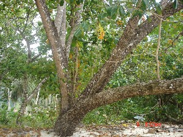

O - o
o- ओ- CLT क्लिटिक. clitic, third singular subject (exclusive); तृतीय एकवचन कर्तावाचक क्लिटिक (अनन्य). o k-ɑono-l olɑm-o ओ काओनो ओलामो. He got tired of sitting. वह बैठे-बैठे थक गया।. SD: grammar, व्याकरण.
obɑːlɔŋ ओबाऽलौङ ADJ वि. round; गोल. SD: attribute, विशेषता.
obeyo ओबेयो MORPH: o-beyo. Etym: Sare; सारे. VAR: o-βio ओबीओ. V क्रि. sting, of an ant or a crab; bite; डंक मारना, चींटी या केकड़े का काटना.
oboikie ओबोईकिये MORPH: oboi-kie. VAR: ibui ईबूई. ADJ वि. cooked; पका हुआ. SD: cooking & food, खाना-पीना.
ocɑecɑʈopʰo ओचाएचाटोफो MORPH: o-cɑe-cɑʈo-pʰo. ADJ वि. useless; किसी काम का नहीं. SD: attribute, विशेषता.
occe ओच्चे MORPH: ot-ce. Etym: Khora; खोरा. N सं. bone of fish; मछली का कांटा. SD: fish, मछली, body part term, शारीरिक अंग शब्दावली.
|
 oco ओचो VAR: ocɔ ओचौ; oːcɔ ओऽचौ; ɔco औचो; ɔcɔ औचौ. N सं. net (fishing); मछली पकड़ने का जाल. o-tɑjiyocɔrer lotopʰolɔ ecul ocɔtɑ ipʰu kʰudi ओताजीयोचौरेर लोतोफोलौ एचूल ओचौता ईफू खूदी. They did not catch the fish since they did not have a net. उनके पास जाल न होने की वजह से वे मछली नहीं पकड़ पाए।. SD: hunting & gathering, शिकार एवं संचय सम्बंधी.
oco ओचो VAR: ocɔ ओचौ; oːcɔ ओऽचौ; ɔco औचो; ɔcɔ औचौ. N सं. net (fishing); मछली पकड़ने का जाल. o-tɑjiyocɔrer lotopʰolɔ ecul ocɔtɑ ipʰu kʰudi ओताजीयोचौरेर लोतोफोलौ एचूल ओचौता ईफू खूदी. They did not catch the fish since they did not have a net. उनके पास जाल न होने की वजह से वे मछली नहीं पकड़ पाए।. SD: hunting & gathering, शिकार एवं संचय सम्बंधी.
 oco ओचो VAR: ocɔ ओचौ; oːcɔ ओऽचौ; ɔco औचो; ɔcɔ औचौ. N सं. bag; थैला. SD: household, घरेलू.
oco ओचो VAR: ocɔ ओचौ; oːcɔ ओऽचौ; ɔco औचो; ɔcɔ औचौ. N सं. bag; थैला. SD: household, घरेलू.
 oco ओचो VAR: ocɔ ओचौ; oːcɔ ओऽचौ; ɔco औचो; ɔcɔ औचौ. N सं. cobweb; मकड़जाल. SD: insect & invertebrate, कीट-पतंग एवं अरीढ़ जीव.
oco ओचो VAR: ocɔ ओचौ; oːcɔ ओऽचौ; ɔco औचो; ɔcɔ औचौ. N सं. cobweb; मकड़जाल. SD: insect & invertebrate, कीट-पतंग एवं अरीढ़ जीव.
ocɔrno ओचौरनो MORPH: ocɔr-no. V क्रि. make net; जाल बनाना.
odɑŋe ओदाङे MORPH: o-dɑŋe. Etym: Little Andaman (Onge); ओंगे. N सं. skull; खोपड़ी. SD: body part term, शारीरिक अंग शब्दावली.
oɖišitjirɑpʰo ओडीशीत्जीराफो MORPH: oɖišit-jirɑ-pʰo. ADJ वि. shy; शर्मीला. SD: attribute, विशेषता.
 oɖu1 ओडू VAR: ɔduːw औदूऽव. N सं. special white clay to make tattoo; सफ़ेद रंग की गोदने वाली खास चिकनी मिट्टी. SD: costume & adornment, आभूषण एवं श्रृंगार. NT: Name of a festival. त्यौहार का नाम।. SEE: oɖu2 ‘paste’ ‘चिपकाना ओडूhm:{2}’.
oɖu1 ओडू VAR: ɔduːw औदूऽव. N सं. special white clay to make tattoo; सफ़ेद रंग की गोदने वाली खास चिकनी मिट्टी. SD: costume & adornment, आभूषण एवं श्रृंगार. NT: Name of a festival. त्यौहार का नाम।. SEE: oɖu2 ‘paste’ ‘चिपकाना ओडूhm:{2}’.
 oɖu2 ओडू VAR: ɔduːw औदूऽव. V क्रि. paste; चिपकाना. SEE: oɖu1 ‘clay’ ‘चिकनी मिट्टी ओडूhm:{1}’.
oɖu2 ओडू VAR: ɔduːw औदूऽव. V क्रि. paste; चिपकाना. SEE: oɖu1 ‘clay’ ‘चिकनी मिट्टी ओडूhm:{1}’.
oinšiŋ ओईन्शीङ V क्रि. pant; हांफना. ʈʰoʈoinšiŋibɔm ठोटोईनशीङीबौम. I am panting/ out of breath. मैं हांफ रहा हूं।. SEE: totšiŋe ‘breathe’ ‘सांस लेना तोतशीङे ’; šuɲe ‘running of nose’ ‘नाक बहना शूञे ’.
oisɛne ओईसैने V क्रि. exchange; अदला-बदली करना.
oiširɔm ओईशीरौम V क्रि. apply on; लगाना.
oitɑci ओईताची MORPH: oi-tɑci. ADJ वि. tested; जांचा हुआ. SD: attribute, विशेषता.
ok ओक V क्रि. bite (as by ant); काटना (चींटी का). ɖowlu ʈʰu bi oko डोवलू ठू बी ओको. An ant bit me. चींटी ने मुझे काटा।.
okɑ ओका VAR: oːkɑ ओऽका. N सं. a salt water prawn; fish; खारे पानी का झींगा; मछली. SD: marine, समुद्री.
okɑrɑ ओकारा MORPH: o-kɑrɑ. DEIXIS डीक्सीस. towards the land; ज़मीन की तरफ़. SD: reference, संदर्भ.
 okkokɑtɑ ओक्कोकाता MORPH: okko-kɑtɑ. V क्रि. cut a very small piece; बहुत छोटा टुकड़ा काटना.
okkokɑtɑ ओक्कोकाता MORPH: okko-kɑtɑ. V क्रि. cut a very small piece; बहुत छोटा टुकड़ा काटना.
okobɔɛ ओकोबौऐ N सं. answer; जवाब; उत्तर. SD: psychological predicate, मनोवैज्ञानिक विधेय.
okojumu1 ओकोजूमू MORPH: oko-jumu. Etym: Jeru; जेरू. N सं. doctor; वैद्य. SD: illness, रोग, medicine, औषधी. NT: This term refers to a man with supernatural powers. Literal meaning: one who speaks from dreams. He is feared and revered. विलक्षण शक्तियों वाला मनुष्य जो दूरदर्शी और माननीय हो। लोग ऐसे वैद्य से डरते भी हैं क्योंकि वे भविष्य-वक्ता भी होते हैं। शाब्दिक अर्थः ‘सपनों से बोलने वाला’।. SEE: okojumu2 ‘man who is possessed by evil; spirit mediums’ ‘वह आदमी जो बुरी आत्मा के कब्ज़े में हो; आत्मा से बात करने वाले ओकोजूमूhm:{2}’.
okojumu2 ओकोजूमू N सं. man who is possessed by evil; spirit mediums; वह आदमी जो बुरी आत्मा के कब्ज़े में हो और इधर-उधर फिरता हो; आत्मा से बात करने वाले. SD: people, लोग. SEE: okojumu1 ‘doctor’ ‘वैद्य ओकोजूमूhm:{1}’.
okor ओकोर Etym: Jeru; जेरू. VAR: orɑ ओरा. Etym: Bea; बेया. N सं. a kind of flower; एक प्रकार का फूल. SD: flora, फूल-पत्ती. NT: It blooms between mid-February and mid-May. इसके खिलने का समय मध्य फरवरी से मध्य मई तक का है।.
okotɑliŋkolɔt ओकोतालीङकोलौत MORPH: okotɑliŋkolɔt. Etym: North Andaman; उत्तरी अण्डमान. N सं. boy, post puberty; तरुण. SD: ritual, रीति-रिवाज़.
okɔʈɔ ओकौटौ MORPH: o-kɔʈɔ. N सं. snout (of pig or dugong); थूथन (सूअर या डूगोंग का). SD: body part term, शारीरिक अंग शब्दावली.
okɔʈɔɑ ओकौटौआ N सं. chest, of dugong; डूगोंग की छाती. SD: body part term, शारीरिक अंग शब्दावली.
oːkrɑ ओऽकरा N सं. Phamfret fish; एक प्रकार की मछली. SD: fish, मछली.
olɑlto ओलाल्तो Etym: Bo; बो. V क्रि. stagnate; ठहर जाना. SEE: olɑltoiyo ‘stagnant’ ‘स्थिर ओलालतोईयो ’.
olɑltoiyo ओलालतोईयो MORPH: olɑlto-iyo. ADJ वि. stagnant, the one who did not move; स्थिर. SD: state, अवस्था. SEE: olɑlto ‘stagnant’ ‘ठहर जाना ओलाल्तो ’.
olɑm ओलाम V क्रि. tire; थकना. o-(ɑ)kɑ-uno-l o-lɑmo ओकाऊनोलोलामो. He got tired while sitting. वह बैठे-बैठे थक गया।.
ole ओले PRN सर्व. anybody; कोई भी. SD: quantifier, परिमाण वाचक.
olemil ओलेमील MORPH: ole-mil. V क्रि. discover; ढूंढ़ना.
olenɑtɑ ओलेनाता PRN सर्व. you guys/ people; तुम लोग. SD: pronominal, सर्वनाम.
oletomrošo ओलेतोमरोशो Etym: Bo; बो. V क्रि. play; खेलना. oletomrošobem ओलेतोमरोशोबेम. Don’t play. मत खेलो।.
olmo ओल्मो N सं. shark; शार्क मछली. SD: fish, मछली.
olmɔšɑr ओल्मौशार Etym: Bo. N सं. rotten fish; सड़ी हुई मछली जो औषधी के काम आती है. SD: fish, मछली.
olomo ओलोमो N सं. a kind of fish; एक प्रकार की मछली. SD: fish, मछली.
olɔf ओलौफ VAR: olɔpʰ ओलौफ. N सं. a kind of tree used for making lighter canoes (like fibre boat); पतली व हल्की नाव (डोंगी) बनाने में काम आने वाला पेड़. SD: flora, फूल-पत्ती.
olɔʈɔp ओलौटौप N सं. octopus; अष्टभुज. SD: marine, समुद्री.
-ol/-el/-il/-lɑ/-ul/-ɑk -ओल/-एल/-ईल/-ला/-ऊल/-आक CASE का. locative; stative; अधिकरण कारक, स्थायीवाचक. meŋɑm bɔro dilli-il ʈʰibitɲom मेङाम बौरो दील्लील ठीबीत्ञोम. We live in Delhi. हम दिल्ली में रहते हैं।. ɲyo-ɑk ŋutconnebom ञ्योआक ङूत्चोन्नेबोम. Will you go home? क्या तुम घर जाओगे? SD: grammar, व्याकरण. NT: postnominal. कारक चिह्न।.
omɑːʈʈɔ ओमाऽट्टौ MORPH: o-mɑːʈʈɔ. N सं. feet; पांव. ŋ-omɑːʈʈɔ ङोमाऽट्टौ. your feet. तुम्हारे पांव. SD: body part term, शारीरिक अंग शब्दावली.
 |
 omɔʈo ओमौटो MORPH: o-mɔʈo. VAR: ɑrɑmɔʈɔ आरामौटौ. N सं. legs; पैर.
omɔʈo ओमौटो MORPH: o-mɔʈo. VAR: ɑrɑmɔʈɔ आरामौटौ. N सं. legs; पैर.  ʈʰo-mɔʈo ठोमौटो. my legs. मेरे पैर. SD: body part term, शारीरिक अंग शब्दावली.
ʈʰo-mɔʈo ठोमौटो. my legs. मेरे पैर. SD: body part term, शारीरिक अंग शब्दावली.
omɔʈɔtʰumikʰu ओमौटौथूमीखू MORPH: o-mɔʈɔ-tʰumikʰu. VAR: ɔ-mɔʈo-tʰu-mikʰu औमौटोथूमीखू. N सं. sole; तलुआ.  ʈʰɔ-mɔʈo-tʰu-mikʰu ठौमौटोथूमीखू. my sole. मेरा तलुआ. SD: body part term, शारीरिक अंग शब्दावली.
ʈʰɔ-mɔʈo-tʰu-mikʰu ठौमौटोथूमीखू. my sole. मेरा तलुआ. SD: body part term, शारीरिक अंग शब्दावली.
omɔʈɔʈɔe ओमौटौटौए MORPH: o-mɔʈɔ-ʈɔe. N सं. upper bone, of foot; पैर की ऊपर वाली हड्डी. ʈʰ-o-mɔʈɔ-ʈɔe ठोमौटौटौए. the upper bone of my foot. मेरे पैर की ऊपर वाली हड्डी. SD: body part term, शारीरिक अंग शब्दावली.
ompʰoŋ ओम्फोङ MORPH: om-pʰoŋ. N सं. sides (of the dugong); बगल (डूगोंग). SD: body part term, शारीरिक अंग शब्दावली. SEE: oŋpʰoŋ ‘armpit’ ‘कांख; बगल ओङफोङ ’.
-om/-bom/-kom/-kɔm -ओम/-बोम/-कोम/-कौम TENSE काल. non-past; वर्तमान या भविष्य काल. ʈʰo-it kɑɲ-om ठोईत काञोम. I am doing something. मैं कुछ काम कर रहा हूं।. SD: grammar, व्याकरण. NT: postverbal. उपसर्ग।.
oncʰo ओन्छो V क्रि. stitch; सिलाई करना.
ondɑːfol ओन्दाऽफोल NUM संख्या. three; तीन. SD: quantifier, परिमाण वाचक.
one ओने VAR: ɛwoːne ऐवोऽने. N सं. oil; juice; तेल; रस. SD: edible item, खाद्य सामग्री. SEE: ino1 ‘water’ ‘पानी ईनोhm:{1}’.
onjiŋkɔ ओन्जीङकौ NUM संख्या. two; दो. SD: numeral, संख्यावाचक.
onrɛːpʈɔːy ओन्रैऽपटौऽय MORPH: on-rɛːpʈɔːy. N सं. backbone; रीढ़ की हड्डी. ŋ-onrɛːpʈɔːy ङोन्रैऽपटौऽय. backbone (your). रीढ़ की हड्डी (तुम्हारी). SD: body part term, शारीरिक अंग शब्दावली.
 onšoŋo1 ओन्शोङो MORPH: on-šoŋo. VAR: oŋšɔmo ओङशौमो; on-soːŋɔ ओन्सोऽङौ. N सं. whole body of human being; आदमी का पूरा शरीर. SD: body part term, शारीरिक अंग शब्दावली. SEE: onšoŋo2 ‘soul’ ‘आत्मा ओन्शोङोhm:{2}’.
onšoŋo1 ओन्शोङो MORPH: on-šoŋo. VAR: oŋšɔmo ओङशौमो; on-soːŋɔ ओन्सोऽङौ. N सं. whole body of human being; आदमी का पूरा शरीर. SD: body part term, शारीरिक अंग शब्दावली. SEE: onšoŋo2 ‘soul’ ‘आत्मा ओन्शोङोhm:{2}’.
onšoŋo2 ओन्शोङो MORPH: on-šoŋo. VAR: onšɔŋɔ ओन्शौनौ. N सं. soul; आत्मा. SD: life, जीवन. SEE: onšoŋo1 ‘body’ ‘शरीर ओन्शोङोhm:{1}’.
 onšoŋoʈɔy ओन्शोङोटौय MORPH: onšoŋo-ʈɔy. N सं. skeleton, lit. body-bone; कंकाल, शाब्दिक अर्थः शरीर-हड्डी. SD: body part term, शारीरिक अंग शब्दावली.
onšoŋoʈɔy ओन्शोङोटौय MORPH: onšoŋo-ʈɔy. N सं. skeleton, lit. body-bone; कंकाल, शाब्दिक अर्थः शरीर-हड्डी. SD: body part term, शारीरिक अंग शब्दावली.
onto ओन्तो MORPH: on-to. N सं. forearm; कोहनी से कलाई तक का हिस्सा. ʈʰ-on-to ठोन्तो. my forearm. मेरा कोहनी से कलाई तक का हिस्सा. SD: body part term, शारीरिक अंग शब्दावली.
 ontoplo1 ओन्तोपलौ VAR: entoplo एनतोपलो; untoplɔ ऊन्तोप्लो. ADJ वि. alone; अकेला.
ontoplo1 ओन्तोपलौ VAR: entoplo एनतोपलो; untoplɔ ऊन्तोप्लो. ADJ वि. alone; अकेला.  ukuntɔploko ऊकून्तौप्लोको. He is a single man. वह अकेला आदमी है।. SD: state, अवस्था, numeral, संख्यावाचक. SEE: ontoplo2 ‘one’ ‘एक ओन्तोपलौhm:{2}’.
ukuntɔploko ऊकून्तौप्लोको. He is a single man. वह अकेला आदमी है।. SD: state, अवस्था, numeral, संख्यावाचक. SEE: ontoplo2 ‘one’ ‘एक ओन्तोपलौhm:{2}’.
 ontoplo2 ओन्तोपलो VAR: entoplo एनतोपलो; untoplɔ ऊन्तोप्लौ. NUM संख्या. one; एक. ɡolɑʈ-ɛrrulu-entoplo-nɔl-pʰo-be गोलाटैर्रूलू एन्तोप्लो नौल फो बे. One of Golat’s eyes is not good. गोलाट की एक आंख ख़राब है।.
ontoplo2 ओन्तोपलो VAR: entoplo एनतोपलो; untoplɔ ऊन्तोप्लौ. NUM संख्या. one; एक. ɡolɑʈ-ɛrrulu-entoplo-nɔl-pʰo-be गोलाटैर्रूलू एन्तोप्लो नौल फो बे. One of Golat’s eyes is not good. गोलाट की एक आंख ख़राब है।.  untoplo meobin cɑe ऊन्तोप्लो मेओबीन चाए. One mango has gone bad. एक आम सड़ गया है।. SD: numeral, संख्यावाचक. SEE: ontoplo1 ‘alone’ ‘अकेला ओन्तोपलोhm:{1}’.
untoplo meobin cɑe ऊन्तोप्लो मेओबीन चाए. One mango has gone bad. एक आम सड़ गया है।. SD: numeral, संख्यावाचक. SEE: ontoplo1 ‘alone’ ‘अकेला ओन्तोपलोhm:{1}’.
ontoʈɔe ओन्तोटौए MORPH: on-to-ʈɔe. N सं. the bone between the elbow and wrist; कलाई से कोहनी तक की हड्डी. ʈʰ-on-to-ʈɔe ठोनतोटौए. the bone between my elbow and wrist. मेरी कलाई से कोहनी तक की हड्डी. SD: body part term, शारीरिक अंग शब्दावली.
oŋcɑle ओङचाले N सं. scar on the limbs; हाथ पर निशान. SD: attribute, विशेषता.
oŋcɔkʰui ओङचौखूई MORPH: oŋ-cɔkʰui. N सं. middle finger; बीच की उंगली, मध्यमा. SD: body part term, शारीरिक अंग शब्दावली.
 oŋkɑrɑ1 ओङकारा MORPH: oŋ-kɑrɑ. VAR: uŋ-kɑrɑ ऊङकारा. N सं. nails; नाख़ून. mɛŋ-oŋ-kɑrɑ मैङोङकारा. our nails. हमारे नाख़ून. SD: body part term, शारीरिक अंग शब्दावली.
oŋkɑrɑ1 ओङकारा MORPH: oŋ-kɑrɑ. VAR: uŋ-kɑrɑ ऊङकारा. N सं. nails; नाख़ून. mɛŋ-oŋ-kɑrɑ मैङोङकारा. our nails. हमारे नाख़ून. SD: body part term, शारीरिक अंग शब्दावली.  ʈʰ-uŋ-kɑrɑ ठूङकारा. my nails. मेरे नाख़ून.
ʈʰ-uŋ-kɑrɑ ठूङकारा. my nails. मेरे नाख़ून.  ʈʰoŋkɑrɑ ठोङकारा. my nail. मेरा नाख़ून. SEE: oŋkɑrɑ2 ‘point of the teeth of a crab’ ‘केकड़े के दांत की नोक ओङकाराhm:{2}’.
ʈʰoŋkɑrɑ ठोङकारा. my nail. मेरा नाख़ून. SEE: oŋkɑrɑ2 ‘point of the teeth of a crab’ ‘केकड़े के दांत की नोक ओङकाराhm:{2}’.
oŋkɑrɑ2 ओङकारा MORPH: oŋ-kɑrɑ. N सं. point of the teeth of a crab; केकड़े के दांत की नोक. SD: body part term, शारीरिक अंग शब्दावली. SEE: oŋkɑrɑ1 ‘nails’ ‘नाख़ून ओङकाराhm:{1}’.
 oŋkɑrɑcɑy ओङकाराचाय N सं. handicapped person, the one who lost his hands or parts of his hands; लूला, वह व्यक्ति जिसका हाथ या हाथ का कोई भाग ख़राब हो. SD: attribute, विशेषता.
oŋkɑrɑcɑy ओङकाराचाय N सं. handicapped person, the one who lost his hands or parts of his hands; लूला, वह व्यक्ति जिसका हाथ या हाथ का कोई भाग ख़राब हो. SD: attribute, विशेषता.
oŋkenɑpcɔkʰo ओङकेनापचौखो MORPH: oŋ-kenɑp-cɔkʰo. N सं. thumb; अंगूठा.  ʈʰoŋ-kenɑp-cɔkʰo ठोङकेनापचौखो. my thumb. मेरा अंगूठा. SD: body part term, शारीरिक अंग शब्दावली.
ʈʰoŋ-kenɑp-cɔkʰo ठोङकेनापचौखो. my thumb. मेरा अंगूठा. SD: body part term, शारीरिक अंग शब्दावली.
oŋkoroncɑe ओङकोरोनचाए MORPH: oŋkoron-cɑe. N सं. maimed; लूला या हाथ ख़राब होना. SD: attribute, विशेषता.
oŋkorɔ ओङकोरौ MORPH: oŋ-korɔ. VAR: oŋ-kɔrɔ ओङकौरौ. N सं. palm; हथेली. ʈʰ-ɔŋ-korɔ ठौङकोरौ. my palm. मेरी हथेली. SD: body part term, शारीरिक अंग शब्दावली.
oŋkorɔtotbɔ ओङकोरौतोत्बौ MORPH: oŋ-korɔ-tot-bɔ. VAR: oŋ-kɔrɔ-ʈoʈ-bɔ ओङकौरौटोटबौ. N सं. upper side, of palm; हथेली का ऊपर वाला भाग. ʈʰ-oŋ-korɔ-tot-bɔ ठोङकोरौतोत्बौ. the upper side of my palm. मेरी हथेली का ऊपर वाला भाग. SD: body part term, शारीरिक अंग शब्दावली.
oŋkɔrɔtotcɔʈɔ ओङकौरौतोतचौटौ MORPH: oŋ-kɔrɔ-tot-cɔʈɔ. N सं. lame, handicapped; लूला, मुड़े हुए हाथ. SD: body part term, शारीरिक अंग शब्दावली.
oŋpʰoŋ ओङफोङ MORPH: oŋ-pʰoŋ. VAR: ɔm-foŋ औमफोङ; um-pʰoŋ ऊमफोङ. N सं. armpit; कांख; बगल. ʈʰ-oŋ-pʰoŋ ठोङफोङ. my armpit. मेरी बगल. SD: body part term, शारीरिक अंग शब्दावली. SEE: ompʰoŋ ‘sides (of Dugong)’ ‘बगल (डूगोंग) ओम्फोङ ’.
oŋrɔno ओङरौनो MORPH: oŋ-rɔno. N सं. ankle; टखना. ʈʰ-oŋ-rɔno ठोङरौनो. my ankle. मेरा टखना.  ʈʰumroŋo ठूमरोङो. my ankle. मेरा टखना. SD: body part term, शारीरिक अंग शब्दावली.
ʈʰumroŋo ठूमरोङो. my ankle. मेरा टखना. SD: body part term, शारीरिक अंग शब्दावली.
oŋtec ओङतेच MORPH: oŋ-tec. N सं. griddle; leaf in which meat is roasted; तवा. SD: cooking & food, खाना-पीना.
oŋtɛc ओङतैच MORPH: oŋ-tɛc. N सं. a kind of leaf; एक प्रकार का पत्ता. SD: flora, फूल-पत्ती. NT: Used for cooking turtle, fish, etc. कछुआ व मछली आदि के पकाने के काम आती है।.
oŋʈɔe ओङटौए MORPH: oŋ-ʈɔe. N सं. wrist bone; कलाई की हड्डी. ʈʰ-oŋ-ʈɔe ठोङटौए. my wrist bone. मेरी कलाई की हड्डी. SD: body part term, शारीरिक अंग शब्दावली.
-oŋ/-ɔŋ/-uŋ -ओङ/-औङ/-ऊङ CASE का. genitive case (inalienable); सम्बंध कारक (अहस्तान्तरित). ʈʰ-ɔŋ kɔrɔ ठौङ कोरौ. my palm. मेरी हथेली. ʈʰ-uŋ kɑrɑ ठूङ कारा. my nails. मेरे नाखून. SD: grammar, व्याकरण. NT: postnominal. कारक चिह्न।.
opʰɑrbɔm ओफारबौम MORPH: o-pʰɑr-bɔm. V क्रि. get hurt; चोट लगना.
opʰeleɲɑk ओफेलेञाक V क्रि. slip; फिसलना.
opontɔplɔkɔ ओपोन्तौपलौकौ N सं. alone, one who is left alone; अकेला. SD: kin term, सम्बंधी वाचक शब्दावली.
opʰotolɔm ओफोतोलौम V क्रि. fart; पाद मारना.
oːprɔ ओऽपरौ N सं. window; खिड़की. SD: household, घरेलू.
orɑ ओरा N सं. shark, small; छोटी शार्क मछली. SD: fish, मछली.
orbor ओरबोर MORPH: or-bor. V क्रि. peel out skin, of a roasted pig; भूने हुए सूअर की खाल उतारना.
orcektɑrɑkɑmo1 ओरचेकताराकामो MORPH: or-cek-tɑrɑkɑmo. N सं. man; आदमी. SD: people, लोग. SEE: orcektɑrɑkɑmo2 ‘very angry’ ‘बहुत क्रोधित ओरचेकताराकामोhm:{2}’.
orcektɑrɑkɑmo2 ओरचेकताराकामो MORPH: or-cek-tɑrɑkɑmo. ADJ वि. very angry; बहुत क्रोधित. SD: attribute, विशेषता. SEE: orcektɑrɑkɑmo1 ‘man’ ‘आदमी ओरचेकताराकामोhm:{1}’.
orɛpʰo ओरैफो V क्रि. mount (as in a boat); चढ़ना (नाव में). SEE: rɛpʰu ‘upload’ ‘चढ़ाना रैफू ’.
 oršubi ओरशूबी MORPH: or-šubi. VAR: ɔr-šubi औरशूबी; ɔːrsuːbi औऽरसूऽबी. N सं. a kind of red snake; अजगर सांप, एक तरह का लाल सांप. SD: reptile, रेंगने वाले जंतु.
oršubi ओरशूबी MORPH: or-šubi. VAR: ɔr-šubi औरशूबी; ɔːrsuːbi औऽरसूऽबी. N सं. a kind of red snake; अजगर सांप, एक तरह का लाल सांप. SD: reptile, रेंगने वाले जंतु.
otɑrɑiculute ओताराईचूलूते MORPH: ot-ɑrɑi-culute. Etym: North Andaman; उत्तरी अण्डमान. N सं. he who was born after me; अनुज, वह जो मेरे बाद जन्मा हो. SD: kin term, सम्बंधी वाचक शब्दावली. NT: Present Great Andamanese pronounce the word as ‘tʰɑrɑ-sulu-tʰue’. आजकल इस शब्द का उच्चारण ‘थारा-सूलू-थूए’ है।.
otbɑtɑ ओतबाता MORPH: ot-bɑtɑ. ADJ वि. short; छोटा. SD: attribute, विशेषता.
 |
 otbec1 ओत्बेच MORPH: ot-bec. N सं. hair; बाल. ʈʰ-ot-bec ठोत्बेच. my hair. मेरे बाल.
otbec1 ओत्बेच MORPH: ot-bec. N सं. hair; बाल. ʈʰ-ot-bec ठोत्बेच. my hair. मेरे बाल.  mɛŋ-ot-bec मेङोत्बेच. our hair. हमारे बाल. SD: body part term, शारीरिक अंग शब्दावली. SEE: otbec2 ‘nails’ ‘नाख़ून ओत्बेचhm:{2}’; otbec3 ‘skin’ ‘त्वचा ओत्बेचhm:{3}’.
mɛŋ-ot-bec मेङोत्बेच. our hair. हमारे बाल. SD: body part term, शारीरिक अंग शब्दावली. SEE: otbec2 ‘nails’ ‘नाख़ून ओत्बेचhm:{2}’; otbec3 ‘skin’ ‘त्वचा ओत्बेचhm:{3}’.
 otbec2 ओत्बेच MORPH: ot-bec. N सं. nails; नाख़ून. ʈʰ-ot-bec ठोत्बेच. my nail. मेरे नाख़ून.
otbec2 ओत्बेच MORPH: ot-bec. N सं. nails; नाख़ून. ʈʰ-ot-bec ठोत्बेच. my nail. मेरे नाख़ून.  mɛŋ-ot-bec मेङोत्बेच. our nails. हमारे नाख़ून. SD: body part term, शारीरिक अंग शब्दावली. SEE: otbec1 ‘hair’ ‘बाल ओत्बेचhm:{1}’; otbec3 ‘skin’ ‘त्वचा ओत्बेचhm:{3}’.
mɛŋ-ot-bec मेङोत्बेच. our nails. हमारे नाख़ून. SD: body part term, शारीरिक अंग शब्दावली. SEE: otbec1 ‘hair’ ‘बाल ओत्बेचhm:{1}’; otbec3 ‘skin’ ‘त्वचा ओत्बेचhm:{3}’.
 otbec3 ओत्बेच MORPH: ot-bec. N सं. skin; त्वचा. ʈʰ-ot-bec ठोत्बेच. my skin. मेरी त्वचा.
otbec3 ओत्बेच MORPH: ot-bec. N सं. skin; त्वचा. ʈʰ-ot-bec ठोत्बेच. my skin. मेरी त्वचा.  mɛŋ-ot-bec मेङोत्बेच. our skin. हमारी त्वचा. SD: body part term, शारीरिक अंग शब्दावली. SEE: otbec1 ‘hair’ ‘बाल ओत्बेचhm:{1}’; otbec2 ‘nails’ ‘नाख़ून ओत्बेचhm:{2}’.
mɛŋ-ot-bec मेङोत्बेच. our skin. हमारी त्वचा. SD: body part term, शारीरिक अंग शब्दावली. SEE: otbec1 ‘hair’ ‘बाल ओत्बेचhm:{1}’; otbec2 ‘nails’ ‘नाख़ून ओत्बेचhm:{2}’.
otben ओत्बेन MORPH: ot-ben. N सं. bone, back shoulder; कंधे के पीछे की हड्डी. SD: body part term, शारीरिक अंग शब्दावली.
 otbɛc ओत्बैच MORPH: ot-bɛc. N सं. hair; body hair; बाल; रोआं.
otbɛc ओत्बैच MORPH: ot-bɛc. N सं. hair; body hair; बाल; रोआं.  ʈʰot-bɛc; ʈʰɛr-bɛc ठोतबैच; ठैर-बैच. my hair. मेरे बाल. bec-e-beliŋ बेचेबेलीङ. haircut. बाल काटना. ʈʰɛr ʈɑŋo bɛc ठैरटाङोबैच. my locks of hair. मेरे बालों की लटें. SD: body part term, शारीरिक अंग शब्दावली.
ʈʰot-bɛc; ʈʰɛr-bɛc ठोतबैच; ठैर-बैच. my hair. मेरे बाल. bec-e-beliŋ बेचेबेलीङ. haircut. बाल काटना. ʈʰɛr ʈɑŋo bɛc ठैरटाङोबैच. my locks of hair. मेरे बालों की लटें. SD: body part term, शारीरिक अंग शब्दावली.
otbitʰum ओतबीथूम MORPH: ot-bitʰum. N सं. arrowhead of turtle hunting spear; कछुए का शिकार करने वाले भाले की नोक. SD: tool, औज़ार, hunting & gathering, शिकार एवं संचय सम्बंधी.
 |
 otbo1 ओत्बो MORPH: ot-bo. VAR: ɔt-bɔ औत्बौ; utbɔː ऊतबौ. N सं. back; पीठ. ot-bot-pʰiri ओत बोत फीरी. Hit on the back by arrows. पीठ पर तीर से मारो।.
otbo1 ओत्बो MORPH: ot-bo. VAR: ɔt-bɔ औत्बौ; utbɔː ऊतबौ. N सं. back; पीठ. ot-bot-pʰiri ओत बोत फीरी. Hit on the back by arrows. पीठ पर तीर से मारो।.  ʈʰot-bo ठोत्बो. my back. मेरी कमर. SD: body part term, शारीरिक अंग शब्दावली. SEE: otbo2 ‘behind’ ‘पीछे ओत्बोhm:{2}’; otbo3 ‘heart (his)’ ‘दिल (उसका) ओत्बोhm:{3}’.
ʈʰot-bo ठोत्बो. my back. मेरी कमर. SD: body part term, शारीरिक अंग शब्दावली. SEE: otbo2 ‘behind’ ‘पीछे ओत्बोhm:{2}’; otbo3 ‘heart (his)’ ‘दिल (उसका) ओत्बोhm:{3}’.
 otbo2 ओत्बो MORPH: ot-bo. VAR: ɔt-bɔ औत्बौ; utbɔː ऊतबौ. DEIXIS डीक्सीस. behind; पीछे. SD: body part term, शारीरिक अंग शब्दावली. SEE: otbo1 ‘back’ ‘पीठ ओत्बोhm:{1}’; otbo3 ‘heart (his)’ ‘दिल (उसका) ओत्बोhm:{3}’.
otbo2 ओत्बो MORPH: ot-bo. VAR: ɔt-bɔ औत्बौ; utbɔː ऊतबौ. DEIXIS डीक्सीस. behind; पीछे. SD: body part term, शारीरिक अंग शब्दावली. SEE: otbo1 ‘back’ ‘पीठ ओत्बोhm:{1}’; otbo3 ‘heart (his)’ ‘दिल (उसका) ओत्बोhm:{3}’.
otbo3 ओत्बो MORPH: ot-bo. N सं. heart (his); दिल (उसका). SD: body part term, शारीरिक अंग शब्दावली. SEE: otbo1 ‘back’ ‘पीठ ओत्बोhm:{1}’; otbo2 ‘behind’ ‘पीछे ओत्बोhm:{2}’.
otbonolpʰo ओतबोनोलफो MORPH: ot-bo-nol-pʰo. ADJ वि. sad; दुखी. SD: attribute, विशेषता.
otbotutdelo1 ओत्बोतूत्देलो MORPH: ot-botutdelo. Etym: Khora; खोरा. N सं. life; ज़िंदगी. meŋ-ot-botutdelo मेङोत्बोतूत्देलो. our life. हमारी ज़िंदगी. SD: life, जीवन. SEE: otbotutdelo2 ‘heart’ ‘दिल ओत्बोतूत्देलोhm:{2}’.
otbotutɖello2 ओत्बोतूत्डेल्लो MORPH: ot-bo-tut-ɖello. Etym: Jeru; जेरू. VAR: ot-bo-ɛt-ɖɛllo ओत्बोऐत्डैल्लो. N सं. heart; दिल. ʈʰ-ot-bo-tut-ɖello ठोत्बोतूत्डेल्लो. my heart. मेरा दिल. SD: body part term, शारीरिक अंग शब्दावली. SEE: otbotutdelo1 ‘life’ ‘ज़िंदगी ओत्बोतूत्देलोhm:{1}’.
otbɔːk ओतबौऽक MORPH: ot-bɔːk. N सं. head, of penis; लिंग का अगला हिस्सा. SD: body part term, शारीरिक अंग शब्दावली.
otbɔːlɔ ओतबौऽलौ V क्रि. remove (skin, bark); खाल या छाल को छीलना. SEE: etbocok ‘peel; sharpen’ ‘छीलना; तेज़ धार बनाना एतबोचोक ’.
otbɔnɔl ओतबौनौल MORPH: ot-bɔ-nɔl. N सं. good/calm person; भला/शांत व्यक्ति. SD: people, लोग, attribute, विशेषता.
 otcɑlɑʈɔe ओत्चालाटौए MORPH: ot-cɑlɑ-ʈɔe. VAR: ot-cɑlɑ-ʈɔy ओतचालाटौय. N सं. ribs; पसलियां. ʈʰ-ot-cɑlɑ-ʈɔe ठोत्चालाटौए. my ribs. मेरी पसलियां. SD: body part term, शारीरिक अंग शब्दावली.
otcɑlɑʈɔe ओत्चालाटौए MORPH: ot-cɑlɑ-ʈɔe. VAR: ot-cɑlɑ-ʈɔy ओतचालाटौय. N सं. ribs; पसलियां. ʈʰ-ot-cɑlɑ-ʈɔe ठोत्चालाटौए. my ribs. मेरी पसलियां. SD: body part term, शारीरिक अंग शब्दावली.
otcɑle ओत्चाले N सं. scar left by arrowhead; तीर की नोक से बना निशान. SD: attribute, विशेषता.
otcɑːme ओत्चाऽमे V क्रि. arrest; गिरफ़्तार करना.
otcɑmo ओत्चामो MORPH: ot-cɑmo. V क्रि. hide; छुपाना.
 |
 otcɑr ओत्चार MORPH: ot-cɑr. VAR: ɔt-cɑr औत्चार; ot-cʰɑr ओत्छार; ot-cɑro ओत्चारो. N सं. chest; middle of the chest; सीना; छाती का मध्य भाग.
otcɑr ओत्चार MORPH: ot-cɑr. VAR: ɔt-cɑr औत्चार; ot-cʰɑr ओत्छार; ot-cɑro ओत्चारो. N सं. chest; middle of the chest; सीना; छाती का मध्य भाग.  ʈʰ-ot-cʰɑr ठोतछार. my chest. मेरा सीना. SD: body part term, शारीरिक अंग शब्दावली.
ʈʰ-ot-cʰɑr ठोतछार. my chest. मेरा सीना. SD: body part term, शारीरिक अंग शब्दावली.
otcɑtŋɑ ओत्चात्ङा MORPH: ot-cɑt-ŋɑ. Etym: Bale; South Andaman; बाले; दक्षिणी अण्डमान. ADJ वि. adopted; गोद लिया हुआ. SD: kin term, सम्बंधी वाचक शब्दावली.
otco ओतचो MORPH: ot-co. N सं. pollen; पराग. SD: flora, फूल-पत्ती.
otcobe ओतचोबे MORPH: ot-cobe. V क्रि. tie with something; किसी चीज़ से बांधना.
otcobi ओत्चोबी MORPH: ot-cobi. V क्रि. kill a large number of people by shooting; गोलियां चलाकर बड़ी संख्या में लोगों को मारना. kʰuɽuc-lɑo-n ot-cobi-k-o खूड़ूच लाओन ओत्चोबीको. The police opened fire on a large crowd. पुलिस ने भीड़ पर गोलियां चलाई।.
otcoːnɑ ओत्चोऽना MORPH: ot-coːnɑ. V क्रि. send; भेजना.
otcotobɑʈ ओत्चोतोबाट MORPH: ot-coto-bɑʈ. N सं. nipple; स्तनाग्र. ʈʰ-otcotobɑʈ ठोत्चोतोबाट. my nipples. मेरे स्तनाग्र. SD: body part term, शारीरिक अंग शब्दावली.
otcɔ ओत्चौ ADJ वि. right; सही. ʈekʰot-otcɔ be टेखोतोतचौ बे. It’s right. सही बात है।. SD: attribute, विशेषता.
otcɔr1 ओत्चौर MORPH: ot-cɔr. N सं. marks, on crocodile’s back; मगरमच्छ के पीठ पर बने निशान. SD: attribute, विशेषता. SEE: otcɔr2 ‘skin’ ‘त्वचा ओत्चौरhm:{2}’.
otcɔr2 ओत्चौर MORPH: ot-cɔr. N सं. skin; त्वचा. SD: body part term, शारीरिक अंग शब्दावली. SEE: otcɔr1 ‘marks, on crocodile’s back’ ‘निशान, मगरमच्छ के पीठ पर बने ओत्चौरhm:{1}’.
otcɔrɔ ओत्चौरौ MORPH: ot-cɔrɔ. N सं. practise hunting; शिकार का अभ्यास. SD: activity & event, कार्यकलाप.
otem ओतेम Etym: Bale; South Andaman; बाले; दक्षिणी अण्डमान. N सं. son’s wife or younger brother’s wife; बहू या छोटे भाई की पत्नी. SD: kin term, सम्बंधी वाचक शब्दावली.
otkɑtɑ1 ओत्काता MORPH: ot-kɑtɑ. ADJ वि. dwarf; बौना. SD: attribute, विशेषता. SEE: otkɑtɑ2 ‘dwarf’ ‘बौना ओत्काताhm:{2}’.
otkɑtɑ2 ओत्काता MORPH: ot-kɑtɑ. N सं. dwarf; बौना. SD: people, लोग. SEE: otkɑtɑ1 ‘dwarf’ ‘बौना ओत्काताhm:{1}’.
otkobɔlo1 ओत्कोबौलो MORPH: ot-kobɔlo. Etym: Khora; खोरा. VAR: ot-kobɔlɔ ओत्कोबौलौ. N सं. bald; गंजा. SD: people, लोग. SEE: otkobɔlo2 ‘bald’ ‘गंजा ओत्कोबौलोhm:{2}’.
otkobɔlo2 ओत्कोबौलो MORPH: ot-kobɔlo. Etym: Khora; खोरा. VAR: ot-kobɔlɔ ओत्कोबौलौ. ADJ वि. bald; गंजा. SD: attribute, विशेषता. SEE: otkobɔlo1 ‘bald’ ‘गंजा ओत्कोबौलोhm:{1}’.
otkʰole ओत्खोले MORPH: ot-kʰole. N सं. smile; मुस्कराना. SD: activity & event, कार्यकलाप.
otkɔbo ओत्कौबो MORPH: ot-kɔbo. VAR: etkɔwbo एत्कौवबो. N सं. bark; skin; छाल; चमड़ी. SD: flora, फूल-पत्ती. SEE: kɔbo ‘coconut husk’ ‘नारियल का छिलका कौबो ’.
otkɔrno ओत्कौरनो MORPH: ot-kɔrno. VAR: ɔt-kɔrnɔ औतकौरनौ. N सं. lungs; फेफड़े. ʈʰ-ot-kɔrno ठोत्कौरनो. my lungs. मेरे फेफड़े. SD: body part term, शारीरिक अंग शब्दावली.
otle ओत्ले DEIXIS डीक्सीस. towards the sea; समुद्र की ओर. SD: navigation, नौका संचालन.
otlile ओतलीले MORPH: ot-lile. VAR: utlile ऊत्लीले. ADJ वि. deaf; बहरा. SD: attribute, विशेषता.
otlɔkʰɔ ओत्लौखौ MORPH: ot-lɔkʰɔ. ADJ वि. nude; नंगा. SD: attribute, विशेषता.
otlɔkʰɔke ओत्लौखौके MORPH: ot-lɔkʰɔ-ke. V क्रि. strip or bare; नंगा करना.
otmɔkɔ ओत्मौकौ MORPH: ot-mɔkɔ. N सं. first wife; पहली पत्नी. ʈʰ-ot-mɔkɔ ठोत्मौकौ. my first wife. मेरी पहली पत्नी. SD: kin term, सम्बंधी वाचक शब्दावली.
otoncɑːmo ओतोनचाऽमो ADJ वि. missing; गुम. SD: attribute, विशेषता.
otoni ओतोनी Etym: Bale; South Andaman; बाले; दक्षिणी अण्डमान. VAR: utuneː ऊतूनेऽ. N सं. daughter’s husband or younger sister’s husband; जमाई या छोटी बहन का पति. SD: kin term, सम्बंधी वाचक शब्दावली.
ototɑrɑtɛi ओतोतारातैई MORPH: oto-tɑrɑ-tɛi. N सं. blood, in the lungs; फेफड़ों का ख़ून. ʈʰ-ototɑrɑtɛi ठोतोतारातैई. blood of my lungs. मेरे फेफड़ों का ख़ून. SD: body part term, शारीरिक अंग शब्दावली.
ototutbɔ ओतोतूत्बौ MORPH: oto-tut-bɔ. ADV क्रि वि. yesterday; कल. SD: time, समय.
otɔː1 ओतौऽ V क्रि. daybreak; पौ फटना. SEE: otɔː2 ‘watch’ ‘देखना ओतौऽhm:{2}’.
otɔː2 ओतौऽ V क्रि. watch; देखना. SEE: otɔː1 ‘daybreak’ ‘पौ फटना ओतौऽhm:{1}’.
otɔncɑm ओतौनचाम V क्रि. hide; छुपना. ɲ-otɔn-cɑmo be ञोतौनचामो बे. Hide yourself. तुम अपने-आप को छुपाओ।. o-tuŋ cɑumo pʰo ओ-तूङ चाऊमो फो. He did not hide himself. उसने अपने-आप को नहीं छुपाया।.
otpʰɑe ओत्फाए MORPH: ot-pʰɑe. VAR: ut-pʰɑe ऊत्फाए. V क्रि. be thirsty; प्यास लगना. ʈʰo-pʰɑe-bɔm ठोफाएबौम. I am thirsty. मैं प्यासा हूं।.
ot-pʰolo ओत्फोलो N सं. shore; तट. ʈʰ-ot pʰolo ठोत फोलो. my shore. मेरा तट. SD: natural environment, प्राकृतिक वातावरण.
otrepʰo ओतरेफो MORPH: ot-repʰo. N सं. intercourse; संभोग. SD: activity & event, कार्यकलाप.
otrɔme ओतरौमे MORPH: ot-rɔme. V क्रि. cover; ढकना.
ottei ओत्तेई MORPH: ot-tei. Etym: North Andaman. N सं. headache; सिरदर्द. SD: illness, रोग.
otteikʰɑ ओत्तेईखा MORPH: ot-teikʰɑ. N सं. murderer; कातिल. SD: people, लोग.
ottekɔkusire ओत्तेकौकूसीरे V क्रि. remove; हटाना.
otto ओत्तो V क्रि. watch; देखना.
ottoɑtue ओत्तोआतूए MORPH: ot-toɑ-tue. Etym: North Andaman; उत्तरी अण्डमान. N सं. born before; अग्रज. SD: kin term, सम्बंधी वाचक शब्दावली.
otʈɛŋ ओत्टैङ MORPH: ot-ʈɛŋ. N सं. temple; कनपटी. ʈʰotʈɛŋ ठोतटैङ. my temple. मेरी कनपटी. SD: body part term, शारीरिक अंग शब्दावली.
otʈɔŋ ओत्टौङ N सं. branch; टहनी. SD: flora, फूल-पत्ती.
otʈɔr ओत्टौर MORPH: ot-ʈɔr. N सं. head, of penis; लिंग का अग्र भाग. ʈʰ-ot-ʈɔr ठोत्टौर. head of my penis. मेरे लिंग का अग्र भाग. SD: body part term, शारीरिक अंग शब्दावली.
-ot/-tot -ओत/-तोत GEN सं का. used for extension or production of self, comitative; सम्बंध कारक चिह्न, उत्पत्ति एवं विस्तार के लिए प्रयुक्त. ʈʰ-ot bec ठोत बेच. my hair. मेरे बाल. SD: grammar, व्याकरण.
-ot/-ut1 -ओत/-ऊत CASE का. experiential; सम्प्रदान कारक. ʈʰ-ut~ʈʰ-ot ʈʰeʈʰe bɔm ठूत ठोत ठेठे बौम. I am hungry. मुझे भूख लगी है।. SD: grammar, व्याकरण. NT: postnominal. कारक चिह्न।. SEE: -ot/-ut2 ‘genitive case (inalienable)’ ‘सम्बंध कारक (अहस्तान्तरित) -ओत/-ऊतhm:{2}’.
-ot/-ut2 -ओत/-ऊत CASE का. genitive case (inalienable); सम्बंध कारक (अहस्तान्तरित). ʈʰ-ot cɑr ठोत चार. my chest. मेरी छाती.  boɑ-ut-ɲo बोआ ऊत्ञो. Boa’s house. बोआ का घर. SD: grammar, व्याकरण. NT: postnominal. कारक चिह्न।. SEE: -ot/-ut1 ‘experiential’ ‘सम्प्रदान कारक -ओत/-ऊतhm:{1}’.
boɑ-ut-ɲo बोआ ऊत्ञो. Boa’s house. बोआ का घर. SD: grammar, व्याकरण. NT: postnominal. कारक चिह्न।. SEE: -ot/-ut1 ‘experiential’ ‘सम्प्रदान कारक -ओत/-ऊतhm:{1}’.
oʈ ओट N सं. bat; चमगादड़. SD: animal, जानवर.
oʈɑrɑ ओटारा Etym: Bo. DEIXIS डीक्सीस. on the top of; शीर्षभाग. SD: space, अन्तरिक्ष.
oʈmeʈʰɔ ओटमेठौ N सं. grave; कब्र. SD: death, मृत्यु सम्बंधी.
oʈɔnno ओटौन्नो MORPH: o-ʈɔnno. VAR: o-ʈɔnnɔ ओटौन्नौ; ɔttʰoːnɔ औत्थोऽनौ. N सं. sperm; वीर्य. ʈʰ-o-ʈɔnno ठोटौन्नो. my sperm. मेरा वीर्य. SD: body product, शरीर से उत्पन्न.
oʈɔpʰolɔ ओटौफोलौ ADJ वि. unclean; गंदा. SD: attribute, विशेषता.
oʈʰɔt toːɔʈʰuye ओठौत तोऽऔठूए VAR: ʈʰu-u-toɑ-tʰu-ʈɔʈɑ ठूऊतोआ थूटौटा. N सं. brother, elder; बड़ा भाई. SD: kin term, सम्बंधी वाचक शब्दावली.
oʈɔy ओटौय MORPH: o-ʈɔy. N सं. bone; हड्डी. ʈʰ-oʈɔy ठोटौय. my bone. मेरी हड्डी. SD: body part term, शारीरिक अंग शब्दावली.
oʈʈɑlɑr ओट्टालार ADJ वि. bald; गंजा. SD: attribute, विशेषता.
oʈʈo ओट्टो N सं. smell (neutral); गंध (हल्की). SD: natural environment, प्राकृतिक वातावरण.
oʈʈole ओट्टोले MORPH: oʈ-ʈole. V क्रि. etch clay design on the back of the body; पीठ पर गोदना.
oʈʈoye ओट्टोये MORPH: oʈ-ʈoye. N सं. spinal cord; रीढ़ की हड्डी. SD: body part term, शारीरिक अंग शब्दावली.
oʈʈɔek ओट्टौएक N सं. neck; गर्दन. oʈʈɔek pʰo ओट्टौएक फो. Behead. गर्दन उड़ा दो।. SD: body part term, शारीरिक अंग शब्दावली.
 |
 oʈʈɔŋ ओट्टौङ MORPH: oʈ-ʈɔŋ. VAR: er-ʈɔŋ एरटौङ; eʈʈɔŋ एट्टौङ. N सं. branch of a tree; पेड़ की शाखा. SD: flora, फूल-पत्ती. NT: Literal meaning: extended tree. शाब्दिक अर्थः विस्तृत पेड़।.
oʈʈɔŋ ओट्टौङ MORPH: oʈ-ʈɔŋ. VAR: er-ʈɔŋ एरटौङ; eʈʈɔŋ एट्टौङ. N सं. branch of a tree; पेड़ की शाखा. SD: flora, फूल-पत्ती. NT: Literal meaning: extended tree. शाब्दिक अर्थः विस्तृत पेड़।.
-o/-ɔ/-ɑ -ओ/-औ/-आ SUF प्र. indicative mood marker; निश्चयार्थ चिह्न. ʈʰu ceu-tɑ iku-beliŋ-o ठू चेऊता ईकूबेलीङो. I cut with a knife. मैं चाकू से काटता हूं।. nɑrɑyɑn-e julu ɛr-šolo-k-o नारायाने जूलू ऐरशोलोको. Narayan hangs the clothes. नारायण कपड़े टांगता है।. SD: grammar, व्याकरण. NT: postverbal. उपसर्ग।.
o-/u- ओ-/ऊ- PRN सर्व. third singular subject; तृतीय एकवचन कर्ता कारक. u-moko ऊमोको. He gave (something). उसने (कोई चीज़) दिया।. SD: pronominal, सर्वनाम.